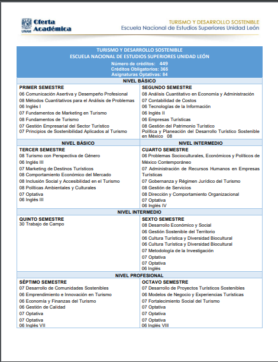
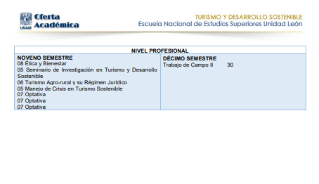

Visión
Mantener el liderazgo, la excelencia académica y la innovación en el ámbito del turismo.
Misión
Impartir educación superior de calidad, promoviendo el desarrollo sostenible y la investigación en turismo.
Perfil de Ingreso
Para ingresar a la licenciatura en Turismo, se requiere interés en el desarrollo turístico, habilidades de comunicación y trabajo en equipo.
Mapa Curricular

Perfil de Egreso
El egresado será capaz de diseñar, gestionar y evaluar proyectos turísticos sostenibles, promoviendo el desarrollo económico y cultural.
Campo Laboral
- Gestión de destinos turísticos
- Consultoría en turismo sostenible
- Administración de empresas turísticas
Costos
Inscripción: $970 MXN
Costo total de la licenciatura: Entre $12,000 y $14,000 MXN